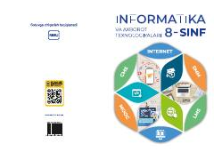

I88-sinf o'quvchilari uchun informatika va axborot texnologiyalari fani darsligi.
Ushbu darslik umumiy o'rta ta'lim maktablarining 8-sinf o'quvchilari uchun mo'ljallangan bo'lib, SMM, CMS, LMS, MOOC va veb-freelance asoslarini o'rgatadi. Kitobda zamonaviy internet texnologiyalari va ijtimoiy media marketingi bo'yicha nazariy hamda amaliy tushunchalar berilgan.